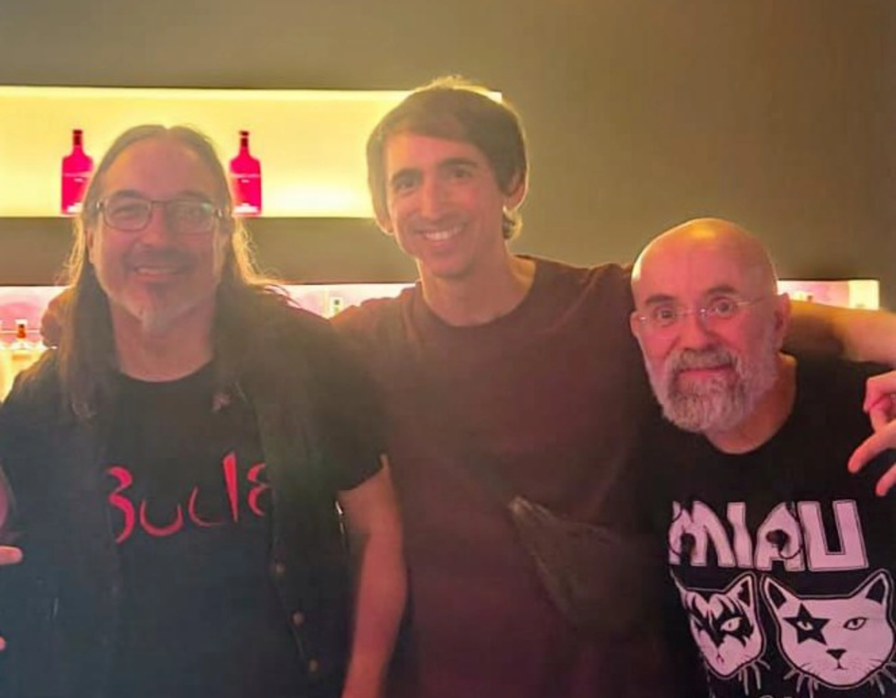

Cuando la euforia del primer encuentro se asentó, llegó el momento de planificar. Y planificar un disco basado en una trilogía de fantasía no es exactamente coser y cantar.
Edmon, a la guitarra, e Isaac, al bajo, se encargarían de la música. Ellos ya tenían experiencia: su proyecto anterior les había dado contactos, soltura y la seguridad de saber que eran capaces de hacerlo. Su plan era trabajar con pistas MIDI, construir los temas desde cero y, cuando cada canción lo pidiera, buscar a las personas adecuadas para darle vida. Cantantes, instrumentistas, lo que hiciera falta.
Yo me encargaría de la letra. Mi terreno siempre ha sido la palabra, la historia, los personajes. De mis manos saldrían las canciones que ellos convertirían en música.

Pronto surgió la primera gran decisión: ¿un disco para toda la trilogía o un disco por libro? La ambición nos empuja a lo segundo. Un proyecto por libro, tres discos, una banda sonora completa para cada novela. Pero todavía es pronto para decidirlo. De momento, lo importante era empezar por el principio: las canciones.
¿De qué tratarían? Esa fue la primera conversación seria. ¿Cómo conviertes cientos de páginas en un puñado de canciones? ¿Qué momentos merecen tener música? ¿Qué escenas piden a gritos ser cantadas?
Una cosa tengo clara: en el primer disco tiene que estar el himno de Forbbings. Es una de las canciones populares que aparecen en la trilogía, y la letra será prácticamente la misma que escribí en su momento. Pero cobrará vida de una forma completamente nueva a través del disco. Personalmente, es de las canciones que más ganas tengo de que se grabe.
¿Quieres intentar ponerle melodía? 1, 2, 3...
y el espléndido sol primaveral
comienza la jornada el aldeano
en Forbbings, su ciudad.
Desde el Sendero Fangoso
hasta el castillo real
Qué pueblo tan hermoso,
vivir aquí es sensacional
Voces1: No cavéis, pues no hay tesoros
Voces2: ¡No cavéis!
Voces1: No busquéis en cuevas o fosos
Voces2: ¡No busquéis!
pues la verdadera fortuna
no reside en la negrura
está en nuestros corazones
¡No hay apuesta más segura!
¡No hay apuesta más segura!
Los colores vespertinos
anuncian a viva voz
¡Aldeano saca el vino!
Pues la jornada ya terminó
La luna envuelve el día
con su manto
mientras la oscuridad
va aumentando
Voces1: No cavéis, pues no hay tesoros
Voces2: ¡No cavéis!
Voces1: No busquéis en cuevas o fosos
Voces2: ¡No busquéis!
pues la verdadera fortuna
no reside en la negrura
está en nuestros corazones
¡No hay apuesta más segura!
¡No hay apuesta más segura!
Forbbings enciende sus candiles
y ya se ha acabado este canto
Y entonces llegó otra pregunta, quizá la más interesante: ¿quién canta? ¿Siempre la misma voz? ¿Un narrador que lo cuenta todo? ¿O damos voz a los personajes?
Rápidamente nos dimos cuenta de que limitarnos a un solo cantante sería desperdiciar el potencial de la historia. En una misma canción pueden convivir varios personajes. Incluso podemos hacer que canten los bosques, que las montañas tengan voz, que los animales cuenten su versión de los hechos. ¿Por qué no? La fantasía no entiende de límites, y la música tampoco.
Las canciones tienen que ser épicas. Oscuras. En algunos momentos, cuando la escena lo pida, habrá luz. El disco no será un camino de rosas —la trilogía tiene demasiadas sombras— pero la luz existe, y cuando aparezca, la música tendrá que reflejarlo. Otras cosas que puedo ir adelantando son que habrá canciones para el momento de la siembra de la semilla y la locura de Francis, otra para la historia de los dos reyes hermanos y un canto melancólico y desesperanzado del mismo Bosque Gris.
Sin ataduras. Sin miedo a experimentar. Porque si algo tengo claro es que este proyecto merece ser tan grande como la historia que lo inspira.